Training the tool

Agents can tell the tool when a potential gap is real or a false positive. The workspace owner reviews these in Suggestions, and the decisions change future scans in every connected browser.
For agents#
- Scan a ticket in the extension.
- Under Potential documentation gaps, read the line that starts with Sending. It lists the exact words that will be sent.
- Press Real gap or Not a gap. The card then shows Sent.
For the owner#
- Open Suggestions. Each card shows the key words, the closest article and how many people voted each way.
- Approve as a gap moves it to Approved gaps, which you can export as CSV.
- Dismiss as false positive hides matching gaps in the extension from the next scan.
- An article covers this lets you pick an indexed article. Matching tickets then show that article under Relevant documentation.
- Use Undo to reopen any decision.
Turning it off#
Owners can switch off Collect suggestions from the extension at the bottom of Suggestions. The extension then shows an error when someone presses a button.
Reconnect or rescan to receive new decisions. The extension must be version 0.4.0 or later.
Deleting suggestions#
- Owners can press Delete on any suggestion, in any list. Deleting asks for confirmation.
- Deleting a dismissed or covered suggestion also removes what the tool learned from it.
- If agents report the same gap again later, it comes back as a new open suggestion.
Merged suggestions#
- Suggestions with almost the same key words and the same closest article appear as one card, with Also reported as variants. Votes and distinct tickets are combined.
- The list is ordered by distinct tickets, then distinct reporters, then recency. Open suggestions on the overview counts cards.
- A decision on a card applies to every suggestion merged into it.
Learning from your team (owner opt-in)#
Two settings on Suggestions, both off by default and changed by owners only. Ticket text never leaves the browser.
- Measure detection quality (counts only): when a staff reply links one of your indexed articles, the extension checks locally whether that article was in its top 3 and sends only whole numbers per day: tickets scanned, tickets with a linked article, top 1, top 3 and misses. Overview then shows Detection quality, for example the share of such tickets where the linked article was in the top 3. It measures how often matching finds the article your team chose, not whether a suggestion is correct.
- Learn from articles staff link: when staff link an indexed article that the extension did not list, it adds one suggestion made of up to 8 filtered key words and that article, marked Staff linked this article for these key terms. You decide with An article covers this, which teaches the matcher. No ticket text, names or ticket numbers are sent.
- Only links to articles already in your index are used; other links are ignored and never sent. The extension must be version 0.6.0 or later.
Still stuck? Check the glossary and FAQ, or ask on GitHub.